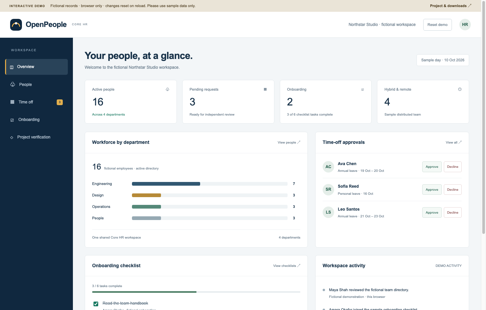

People & organisation
Maintain employee records, reporting relationships and clear account roles.
A shared workspace for people, time off and everyday HR.
Run it on your own computer. Keep control of your data.
Interactive browser demo with fictional records. Full app runs on your own host.

One authoritative workspace, with a browser interface for your team.
Maintain employee records, reporting relationships and clear account roles.
Handle leave, attendance, onboarding checklists and core reporting together.
Authenticator MFA, session controls, optional organisation SSO and audit records.
Schedule encrypted backups to a chosen folder and practise verified restoration.
Python, the application and libraries are bundled in the offline installer kits.
Use a shared local host with private HTTPS/VPN. Each person has their own account.
Keep encrypted recovery archives off the host. An existing cloud-sync client can upload them.
The host must stay reachable. Live databases are not synchronised between independent computers. Cloud upload and recovery require the operator's own setup.
Choose your platform. Extract the full ZIP and follow the installer guide.